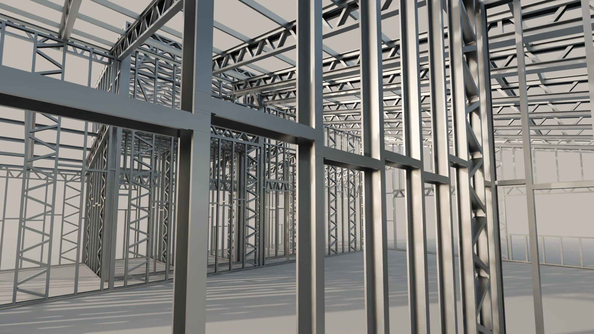

engenharia tributária
A obra paga INSS. Quase sempre a mais.
Toda obra recolhe contribuição previdenciária sobre a mão de obra. Quando o dono não comprova o que pagou, a Receita Federal presume pela área construída. A norma prevê três caminhos para pagar só o devido, e o steel frame pode usar todos.
O que é o INSS da obra
Pedreiro, montador, eletricista: sobre a remuneração de quem trabalha na obra incidem a contribuição previdenciária e as contribuições de terceiros. Quem responde é o proprietário do imóvel ou o dono da obra. Na empreitada total, a construtora.
A conta fecha no fim, na aferição. A lei federal pede a certidão negativa da obra para averbar a construção na matrícula do imóvel, e quem financia pela Caixa só recebe a última parcela com a averbação feita.
A Receita acompanha as obras pelos alvarás e habite-se que as prefeituras informam. Quem recebe o aviso e não regulariza pode ser fiscalizado, com multa de 75% a 225% sobre o valor devido.
Sem comprovação, vale a área construída
É a aferição indireta. O Sero, serviço eletrônico da Receita Federal, parte da área do projeto e chega à contribuição em quatro passos.
Custo da obra
Área equivalente vezes o VAU. Na casa unifamiliar de até 1.000 m², a área equivalente é 89% da área principal. O VAU é o valor por m² que a Receita atualiza todo mês, por estado e por destinação.
150 m² × 89% × R$ 2.000 = R$ 267.000Mão de obra presumida
Um percentual do custo, conforme o tipo da obra: 20% na alvenaria, 15% na madeira ou mista.
20% = R$ 53.400Fator social
Só para pessoa física. Reduz a base conforme a área total: quanto menor a obra, maior a redução.
de 100 a 200 m², 40% = R$ 21.360Alíquota
36,8% sobre a remuneração apurada, depois de abatido o que foi declarado e recolhido durante a obra.
36,8% = R$ 7.860
Fator social, por área total da obra
| Área total | Percentual aplicado à base |
|---|---|
| Até 100 m² | 20% |
| De 100 a 200 m² | 40% |
| De 200 a 300 m² | 55% |
| De 300 a 400 m² | 70% |
| Acima de 400 m² | 90% |
Três caminhos previstos na norma
Enquadrar o tipo da obra
Estrutura ou paredes externas de metal, de madeira ou pré-fabricadas: a obra é do tipo mista. A mão de obra presumida cai de 20% para 15% do custo. A prova é a nota fiscal da estrutura.
base 25% menorComprovar o pré-fabricado
Estrutura ou paredes externas feitas em fábrica de terceiros e montadas na obra: a remuneração apurada cai 70% quando as notas de venda e de montagem somam pelo menos 40% do custo calculado pela Receita.
base 70% menorDeclarar a mão de obra
Para pessoa física: se a remuneração declarada durante a obra chega a 50% da mão de obra apurada, com declaração entregue em todos os meses, não há saldo a pagar na aferição. Acima de 350 m², o mínimo é 70%.
saldo zero na aferiçãoAs reduções por fator social, pré-fabricado, categoria e destinação da obra são cumulativas. Reforma tem redução de 65% e demolição, de 90%. Piscina, quadra e garagem térrea fora do corpo da casa contam como área complementar, com redução de 50% quando cobertas e de 75% quando descobertas. Concreto e argamassa usinados têm abatimento próprio, calculado sobre o custo da obra.
A norma não cita steel frame. Descreve o que ele é.
Nem a instrução normativa nem o Manual do Sero usam a expressão. Trazem dois critérios, e a casa em steel frame pode atender aos dois.
Estrutura de metal
A obra é do tipo mista quando “as paredes externas ou a estrutura da edificação forem de madeira, metal ou de material pré-fabricado ou pré-moldado”. No steel frame, a estrutura são os perfis de aço galvanizado. Para sustentar o enquadramento, a Receita pode pedir o projeto aprovado e a nota fiscal da estrutura.
Componente pré-fabricado
Para a Receita, pré-fabricado é “o componente ou a parte de uma edificação adquiridos prontos em estabelecimento comercial ou fabricados por antecipação em estabelecimento industrial de terceiros, para posterior instalação ou montagem na obra”. Painel de parede produzido em fábrica de terceiros e montado no canteiro pode caber na definição, desde que substitua a estrutura e a alvenaria das paredes externas. O Manual do Sero só dá exemplo em concreto, e perfil cortado e montado na própria obra não é pré-fabricado. A Receita não tem ato que cite o steel frame: o enquadramento é conferido obra a obra.
O que derruba a redução
- Notas que somam menos de 40% do custo apurado. A área passa a ser tratada como mista.
- Painel fabricado pela própria construtora. Não conta para a redução.
- Nota de laje, fundação, piso, cobertura ou parede interna. Não entra na soma. Elétrica e hidráulica também não.
- Montagem cuja mão de obra já foi declarada e usada como dedução. A mesma remuneração não conta duas vezes.
Os dois critérios não se somam. Para usar a redução de pré-fabricado, a obra consta no CNO como alvenaria e o cálculo parte dos 20%. O tipo pode ser alterado no CNO antes da aferição. As notas, não. Por isso o planejamento é feito antes da compra do aço.

O enquadramento começa antes da obra
Antes de começar
Inscrição no CNO em até 30 dias do início, com área, destinação e tipo corretos. É aqui que o caminho começa a ser definido: mista, pré-fabricado ou mão de obra declarada.
IN RFB 2.061, art. 18Na compra
O fabricante emite a nota de venda dos painéis e a de montagem, ou uma só, de venda com montagem. Estrutura e paredes externas ficam separadas do resto.
IN RFB 2.021, art. 26, § 2ºDurante a obra
Mão de obra declarada mês a mês, com vínculo à inscrição da obra. Notas e comprovantes guardados: o que não tem vínculo com a obra não abate.
IN RFB 2.021, arts. 31 a 33Ao terminar
Aferição no Sero, DCTFWeb Aferição de Obras, DARF e certidão emitida pela internet. Com a certidão, a averbação no cartório.
IN RFB 2.021, arts. 6º, 43 e 44
Treze obras com a aferição concluída. R$ 54.894 de economia documentada em três delas.
| Cidade | Obras | Ano da aferição |
|---|---|---|
| Marília · SP | 8 | 2021 a 2026 |
| Sinop · MT | 1 | 2026 |
| Franca · SP | 1 | 2026 |
| Itupeva · SP | 1 | 2026 |
| Vargem Grande Paulista · SP | 1 | 2023 |
| Pedrinhas Paulista · SP | 1 | 2026 |
O que mudou em três delas
| Obra | Caminho | Sem planejamento | Na aferição | Economia |
|---|---|---|---|---|
| Marília · 576 m² · 2021 | pré-fabricado | R$ 46.802 | R$ 18.650 | R$ 28.153 |
| Sinop · 205 m² · 2026 | pré-fabricado | R$ 27.027 | R$ 7.910 | R$ 19.117 |
| Marília · 371 m² · 2026 | fator de ajuste | R$ 7.624 | R$ 0 | R$ 7.624 |
Valores das memórias de cálculo do Sero. Sem planejamento: simulação anterior, ou o débito antes do fator de ajuste. Na aferição: débito apurado na aferição concluída. Nas duas primeiras obras, a simulação e a aferição têm datas diferentes. As outras dez obras não têm simulação anterior guardada para comparar e por isso ficam fora da soma.
Casa de 150 m² em steel frame
Memória de cálculo
- Área equivalente 150 m² × 89%
- 133,5 m²
- Custo da obra por aferição 133,5 m² × R$ 2.000
- R$ 267.000
- Mão de obra presumida, obra do tipo alvenaria 20%
- R$ 53.400
- Fator social, de 100 a 200 m² 40%
- R$ 21.360
- Contribuição sem planejamento 36,8%
- R$ 7.860
- Remuneração depois da redução por pré-fabricado − 70%
- R$ 6.408
- Contribuição com pré-fabricado comprovado 36,8%
- R$ 2.358
- Notas do fabricante necessárias 40% do custo
- R$ 106.800
Quanto a Receita cobraria da sua obra?
É o que a Receita cobra quando a obra não tem planejamento tributário: sem nota e sem enquadramento, qualquer sistema é calculado como alvenaria. Com o enquadramento certo e as notas em ordem, esse valor cai.
O que mais perguntam sobre o INSS da obra
Toda obra paga INSS?
Em regra, sim: na obra de pessoa física a Receita presume a mão de obra pela área. A exceção mais comum é a casa própria de até 70 m², residencial e unifamiliar, de tipo econômico ou popular, erguida sem mão de obra remunerada por pessoa física que não tenha outro imóvel. As condições valem juntas. Há ainda casos de mutirão e de trabalho voluntário.
Quem responde pelo INSS da obra: eu ou a construtora?
O proprietário do imóvel ou o dono da obra. Quando uma construtora é contratada por empreitada total, a responsabilidade pela obra é dela, e ela responde solidariamente com o proprietário. Em contrato por administração, a responsabilidade continua com quem contratou.
O que é o CNO e qual é o prazo?
É o Cadastro Nacional de Obras, da Receita Federal. A inscrição deve ser feita em até 30 dias, contados do início da obra, com todos os responsáveis informados. Perder o prazo sujeita o responsável a multa.
O que é a aferição e quando ela é feita?
É o fechamento da conta no Sero, o serviço eletrônico da Receita, quando a obra termina. O sistema calcula a remuneração da mão de obra, abate o que foi declarado e recolhido durante a obra e gera a DCTFWeb Aferição de Obras. O DARF vence no dia 20 do mês seguinte ao envio.
E se eu não regularizar a obra?
A Receita Federal monitora as obras com base nos alvarás e habite-se emitidos pelas prefeituras e envia aviso ao responsável. Quem não regulariza no prazo do aviso pode ser fiscalizado e ter as contribuições lançadas com multa de 75% a 225% do valor devido.
Pela norma federal, a averbação da construção no registro de imóveis pede a certidão negativa da obra. Com ou sem essa exigência no cartório, a contribuição continua devida.
Steel frame paga menos INSS que alvenaria?
Pode pagar. Com a estrutura de metal comprovada por nota fiscal, a obra é do tipo mista e a mão de obra presumida cai de 20% para 15% do custo. Com estrutura ou paredes externas feitas em fábrica de terceiros e notas que somem pelo menos 40% do custo apurado, a remuneração pode cair 70%.
Sem nota e sem enquadramento, a casa em steel frame é calculada como alvenaria.
Que notas fiscais contam para a redução de pré-fabricado?
As de venda da estrutura e das paredes externas pré-fabricadas e as de instalação ou montagem, emitidas pelo fabricante ou por quem montou.
Não contam notas de laje, fundação, piso, cobertura e paredes internas, nem as de elétrica, hidráulica e outros serviços complementares.
Contratei pedreiro sem registro. E agora?
Sem remuneração declarada não há o que abater: a contribuição incide sobre toda a mão de obra presumida pela área. Continuam valendo o fator social, o enquadramento correto do tipo de obra e, se for o caso, a decadência.
Paguei autônomo ou MEI. Isso abate?
Abate quando a remuneração foi declarada com vínculo à obra. As contribuições sobre a remuneração declarada do autônomo, ou do MEI contratado para hidráulica, elétrica, pintura, alvenaria ou carpintaria, deduzem a contribuição patronal de 20% apurada na aferição.
Construí há mais de cinco anos. Ainda devo?
A Receita tem cinco anos para lançar a contribuição, contados do primeiro dia do ano seguinte. Em aferição feita em 2024, por exemplo, estava decaído o que ocorreu até 31 de dezembro de 2018. Cabe ao responsável provar quando a obra terminou: habite-se, IPTU com a área construída, certidão da prefeitura, escritura ou contrato de financiamento da época.
Se só uma parte da obra é antiga, a contribuição incide apenas sobre o período recente.
Reforma e ampliação pagam?
Pagam, com regra própria. Na reforma, a remuneração devida tem redução de 65%. Na ampliação, a conta é feita só sobre a área acrescida. Na demolição, a redução é de 90%.
Piscina e garagem entram na área?
Entram com peso menor. Piscina, quadra esportiva e garagem térrea fora da projeção da casa são áreas complementares: redução de 50% quando cobertas e de 75% quando descobertas. Precisam estar discriminadas no projeto. Sem isso, são calculadas como área principal.
O valor do simulador é o que eu vou pagar?
É uma estimativa. O cálculo oficial usa o VAU do mês da aferição, por estado e por destinação da obra, consultado no próprio Sero. O simulador usa R$ 2.000 por m² como referência e considera casa unifamiliar de pessoa física, obra nova.
E o ISS da obra?
É outro imposto, municipal. O INSS da obra é federal e segue a mesma norma no país inteiro.
Quando contratar a engenharia tributária?
Antes de comprar o aço. O enquadramento depende de como a obra é inscrita no CNO e de como as notas são emitidas. Com a obra pronta, resta conferir o cálculo e aproveitar o que já está documentado.
- Instrução Normativa RFB nº 2.021, de 16 de abril de 2021, texto consolidado. Contribuições sobre a mão de obra de obra de construção civil, Sero, aferição e certidão. normas.receita.fazenda.gov.br
- Instrução Normativa RFB nº 2.061, de 20 de dezembro de 2021. Cadastro Nacional de Obras (CNO). normas.receita.fazenda.gov.br
- Receita Federal. Manual do Sero, versão 3.0, agosto de 2024. gov.br/receitafederal
- Lei nº 8.212, de 24 de julho de 1991, arts. 33, 47 e 49, conforme citados nas instruções normativas acima. planalto.gov.br
- Código Tributário Nacional, Lei nº 5.172, de 1966, art. 173, conforme transcrito no Manual do Sero. planalto.gov.br
- Receita Federal. Recebi um aviso ou intimação. gov.br/receitafederal
- Caixa. Cartilha de construção, conclusão, reforma e ampliação de unidades habitacionais isoladas, versão 12, dezembro de 2025. caixa.gov.br
Conteúdo informativo, conferido em novembro de 2026 no texto das duas instruções normativas e no Manual do Sero. Os valores são estimativas para pessoa física, obra nova residencial unifamiliar, sem decadência, com VAU de referência de R$ 2.000 por m². O VAU oficial é consultado no Sero. O enquadramento de cada obra é confirmado caso a caso, com o projeto e as notas em mãos.